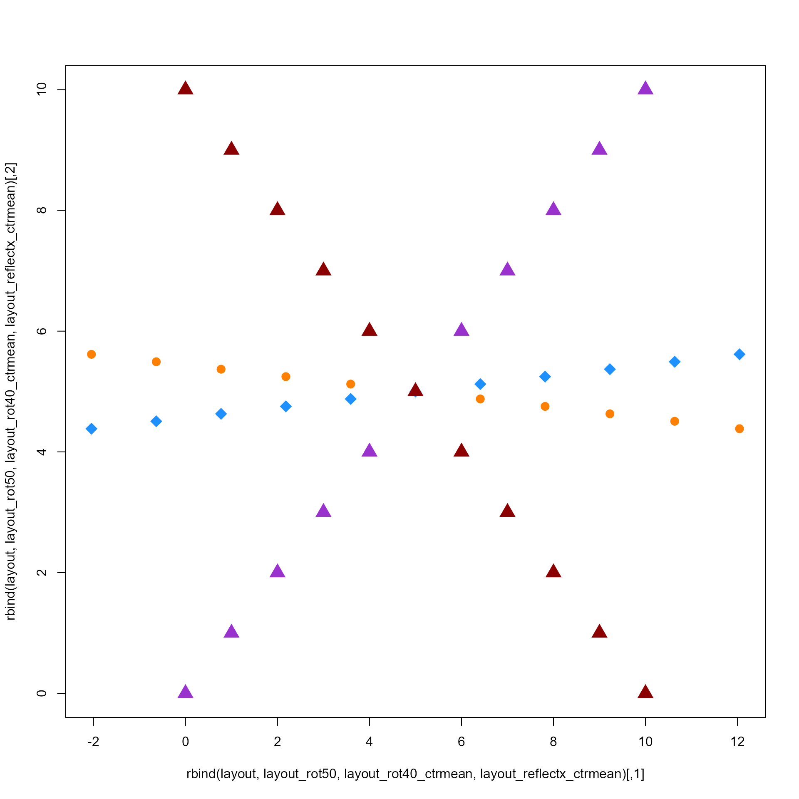

Rotate numeric coordinates, optionally after reflecting coordinates along one or more coordinate axes.
matrix with 2 or more columns.
numeric value indicating the degrees to rotate layout coordinates, where 360 degrees is one complete rotation.
character string indicating one or more axes
to reflect coordinates, which flips the position of coordinates
along that axis. It is usually called to flip x-axis or y-axis
coordinates, for example with reflect="x" or reflect=1.
Input is handled as follows:
if reflect contains "none", then reflect is applied to
none of the coordinate axes, therefore the default
reflect=c("none", "x", "y", "z") will apply no reflection.
character input: reflect values are matched to colnames(x).
When there are no colnames(x), then reflect values of
c("x", "y", "z") are automatically recognized as columns
c(1, 2, 3) respectively.
integer input is treated as a vector of column index positions,
for example reflect=c(2) will reflect values on the second
coordinate column.
numeric coordinates to use as the center, or
center=NULL to calculate the center using center_rule.
character string indicating which rule to
apply to determine the center coordinates when center=NULL.
Note that it has little effect on most downstream plotting
assuming the plot function adjusts x- and y-axis ranges to
the data range, but may modify the axis ranges as a result.
"origin" uses c(0, 0);
"mean" uses the mean of each axis;
"median" uses the median of each axis;
"min" uses the minimum of each axis;
"max" uses the max of each axis.
integer vector indicating which axis
coordinates to rotate, by default c(1, 2) uses the first
two axes in x. Note that rotation_axes must represent
columns present in x.
additional arguments are ignored.
numeric matrix with the same number of columns as the
input x.
This function rotates coordinates in two axes, by the angle
defined in degrees. It optionally reflects coordinates in
one or more axes, which occurs before rotation.
Note that the reflect is applied before degrees.
Rotation code kindly contributed by Don MacQueen to the maptools
package, and is reproduced here to avoid a dependency on maptools
and therefore the sp package.
Other jam utility functions:
avg_angles(),
avg_colors_by_list(),
call_fn_ellipsis_deprecated(),
cell_fun_bivariate(),
collapse_mem_clusters(),
colorRamp2D(),
deconcat_df2(),
display_colorRamp2D(),
enrichList2geneHitList(),
filter_mem_genes(),
filter_mem_sets(),
find_colname(),
get_igraph_layout(),
gsubs(),
handle_igraph_param_list(),
isColorBlank(),
make_legend_bivariate(),
make_point_hull(),
mem_find_overlap(),
order_colors(),
rank_mem_clusters(),
subgraph_jam(),
subset_mem(),
summarize_node_spacing(),
xyAngle()
layout <- cbind(0:10, 0:10);
layout_rot50 <- rotate_coordinates(x=layout, degrees=50);
layout_rot40_ctrmean <- rotate_coordinates(x=layout, degrees=40, center_rule="mean");
layout_reflectx_ctrmean <- rotate_coordinates(x=layout, reflect="x", center_rule="mean");
plot(rbind(layout, layout_rot50, layout_rot40_ctrmean, layout_reflectx_ctrmean),
col=rep(c("darkorchid", "darkorange1", "dodgerblue", "red4"), each=11),
pch=rep(c(17, 20, 18, 17), each=11),
cex=2);
